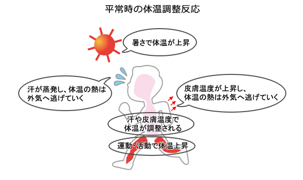
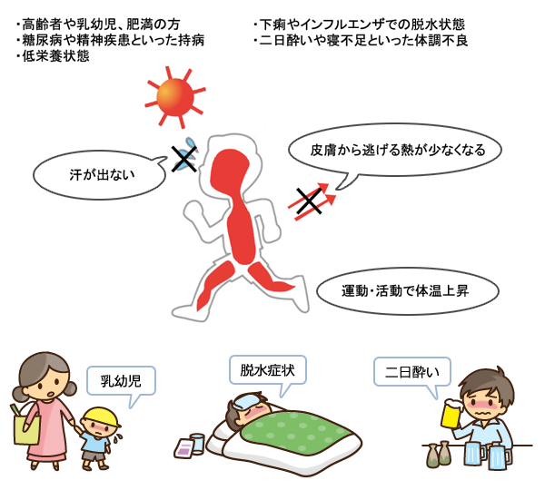
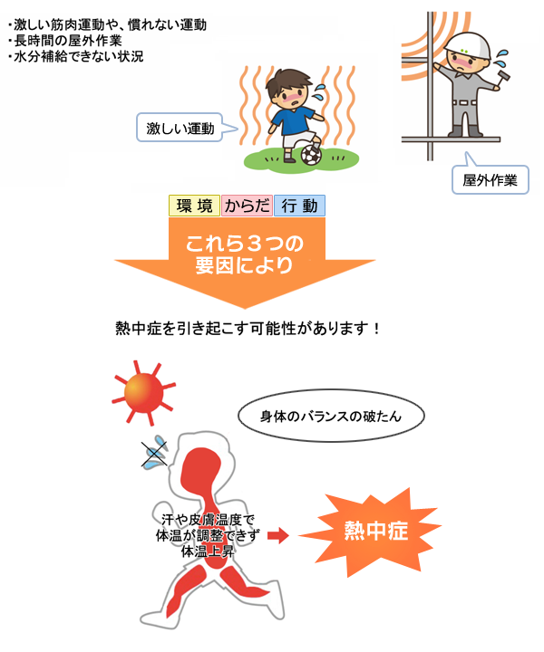
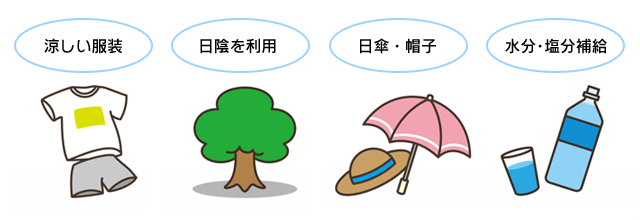

はじめに
今年の夏は例年よりも暑いと言われています。新型コロナの影響でマスクされる方もみえて、例年よりも熱中症対策に本気で取り組む必要があります。本WEBは、熱中症の危険度を示す「暑さ指数」を可視化することが目的です。
☆更新履歴☆
2020. 7. 5 本WEB公開
暑さ指数マップ
観測地点における暑さ指数をマップに表示しています。
暑さ指数データは、こちらを、観測点の位置情報は、こちらをそれぞれ参照しました。
暑さ指数リスト
暑さ指数マップをリストに変換し、掲載しています。
熱中症の基礎知識
・熱中症の基礎知識について、まとめました。
熱中症はどのようにして起こるのか？
熱中症を引き起こす条件は、「環境」と「からだ」と「行動」によるものが考えられます。「環境」の要因は、気温が高い、湿度が高い、風が弱いなどがあります。
「からだ」の要因は、激しい労働や運動によって体内に著しい熱が生じたり、暑い環境に体が十分に対応できないことなどがあります。
その結果、熱中症を引き起こす可能性があります。
人間の身体は、平常時は体温が上がっても汗や皮膚温度が上昇することで体温が外へ逃げる仕組みとなっており、体温調節が自然と行われます。

熱中症を引き起こす３つの要因
・要因その１ 環境 ・要因その２ からだ
・要因その２ からだ ・要因その３ 行動
 体温の上昇と調整機能のバランスが崩れると、どんどん身体に熱が溜まってしまいます。このような状態が熱中症です。
熱中症を予防するにはどうしたらよいの？
 ・無理をせず徐々に身体を暑さに慣らしましょう・室内でも温度を測りましょう
・体調の悪いときは特に注意しましょう
関連情報
関連リンク
 山中伸弥による新型コロナウイルス情報発信
山中伸弥による新型コロナウイルス情報発信  暑さ予測ランキング
暑さ予測ランキング 参考文献
ＱＲコード
本ＷＥＢのＱＲコードです。
※なお、利用規約は、防災INSIGHT 利用規約 に準拠します。